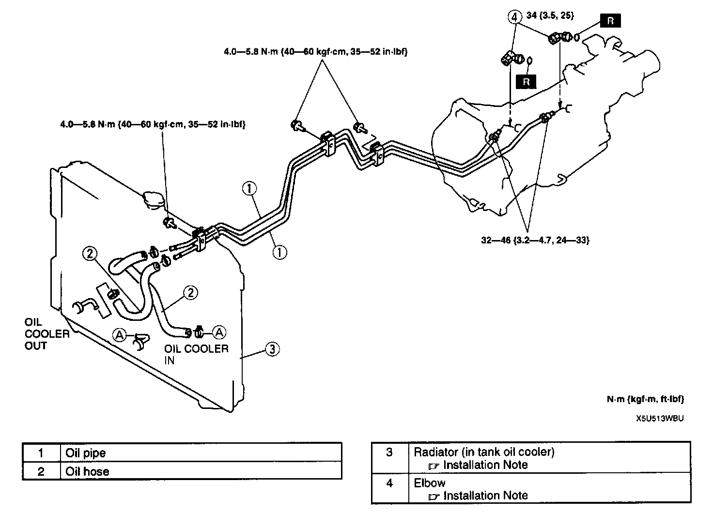
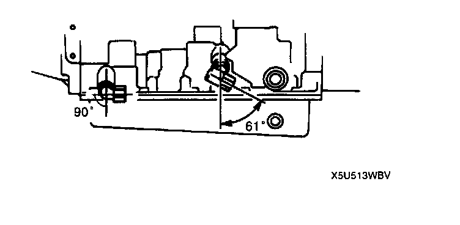
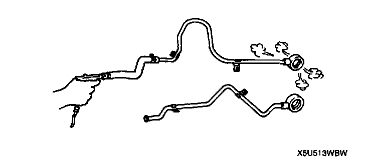
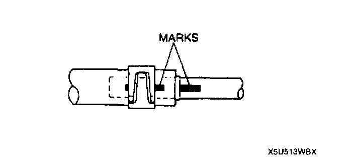
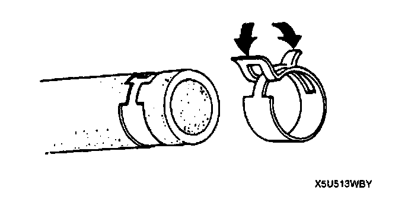

Transmission Cooler: Service and Repair
OIL COOLER REMOVAL/INSTALLATION1. Disconnect the negative battery cable.
2. Drain the ATF.

3. Remove in the order indicated in the table.
4. Install in the reverse order of removal.
5. Add ATF to the specified level.
6. Connect the negative battery cable.
7. Inspect for oil leakage from the oil pipes and oil hoses.
8. Inspect the ATF level and condition.
9. Carry out the mechanical system test.
10. Carry out the road test.
Elbow Installation Note
1. Apply ATF to the O-ring, then install it to the elbow.

2. Install the elbows in the angle shown in the figure, then tighten the nut.
Tightening torque 34 N m (3.5 kgf m, 25 ft. lbs.)
Radiator (In Tank Oil Cooler) Installation Note
1. The automatic transmission oil cooler flushing must be performed whenever a transmission is removed for service to remove existing fluid which may be contaminated to prevent contamination of new fluid. The flushing must be performed after installation of the overhauled or replaced transmission.
2. Follow the instruction in the manufacturers publication for flushing operation.
Oil Hose Installation Note
Caution: In order to prevent ATF leakage, replace the hose when any damage is found inside or outside of the hose, especially on areas contacting with pipes.

1. Apply compressed air to cooler-side opening, and blow any remaining dust and foreign material from the cooler pipes. Compressed air should be applied for no less than one minute.

2. Align the marks, and slide the oil cooler hose onto the oil cooler pipe until it is fully seated as shown.

3. Install the hose clamp onto the hose. If reusing the hose, install the new hose clamp exactly onto the mark left by the previous hose clamp.
4. Verify that the hose clamp does not interfere with any other parts.